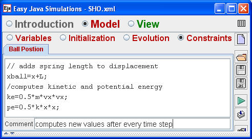

In the Simple Harmonic Oscillator model motion takes place along the x (horizontal) coordinate axis but the location of the ball is not the displacement from equilibrium. The easiest way to specify the location of the ball is to define auxiliary variables xball and yball that are computed using the spring length L and the displacement x.
Newton's Second Law can be written as a system of first order differential equations in terms of displacement x and the mass is positioned using the auxiliary variable xball. (See the Free Fall model for a description of how to input differential equations into Ejs.)
dx/dt = vx
dvx/dt =-(k/m) x .
Variables, such as the ball's position or kinetic energy, that depend on dynamical variables, such as the ball's displacement, must be recomputed after ever time step. This computation is done by creating a Constraints page within the model.

Although Constraints are trivial for the mass-spring model, they become more important in advanced models. For example, the Pendulum model computes the angular displacement of pendulum, but the pendulum bob (mass) is positioned within the view using Cartesian coordinates.